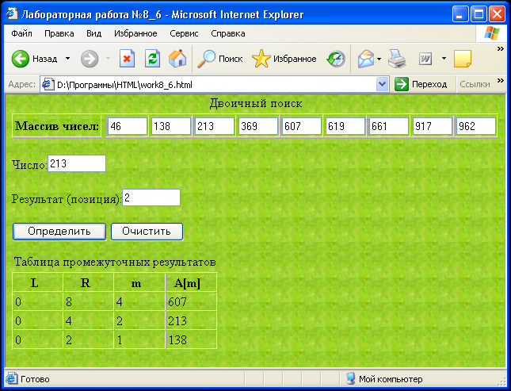

Сибирский государственный университет
телекоммуникаций и информатики
Лабораторные задания по курсу
"Введение в Интернет"
Лабораторная работа N 2.12
Двоичный поиск
Задание
Создайте форму, состоящую из:
- текстовых полей для элементов отсортированного массива;
- текстового поля для ввода числа, которое нужно найти;
- текстового поля для вывода позиции найденного числа;
- многострочного текстового поля для вывода таблицы промежуточных результатов;
- кнопки "Определить", по нажатию которой производится поиск числа,
выводится его позиция в массиве
и таблица промежуточных результатов;
- кнопки "Очистить", по нажатию которой производится очистка таблицы промежуточных результатов.
Предусмотреть возможность изменения элементов массива в форме.
При изменении значения элемента массива должна происходить его пересортировка.
Это должно выглядить приблизительно так:
